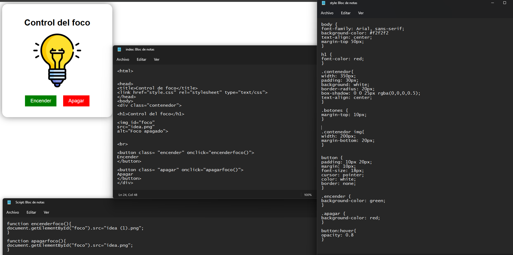
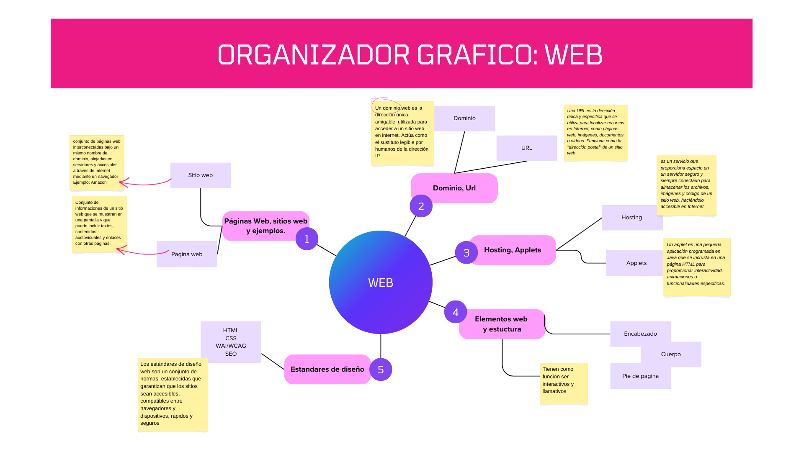
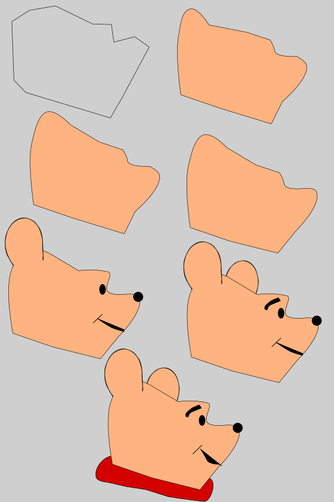
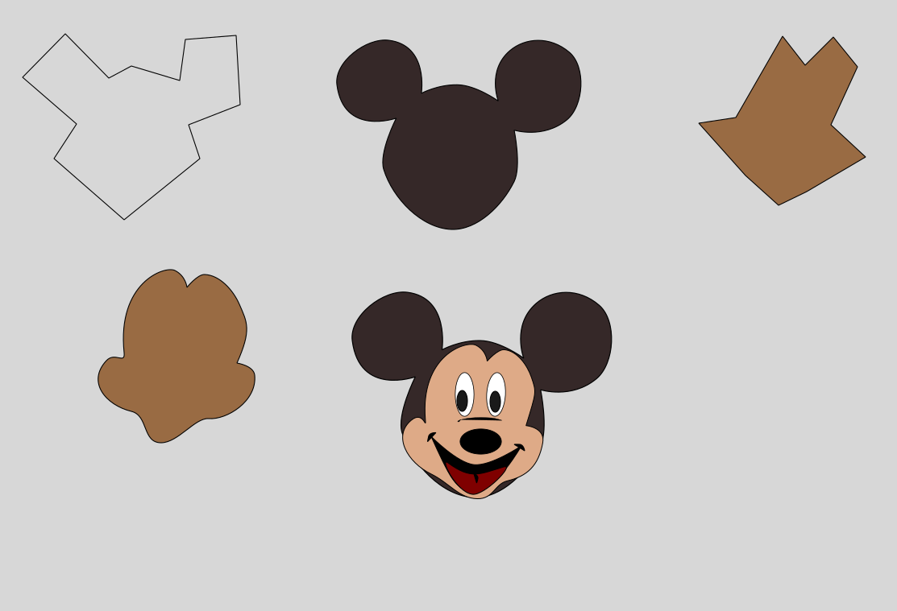
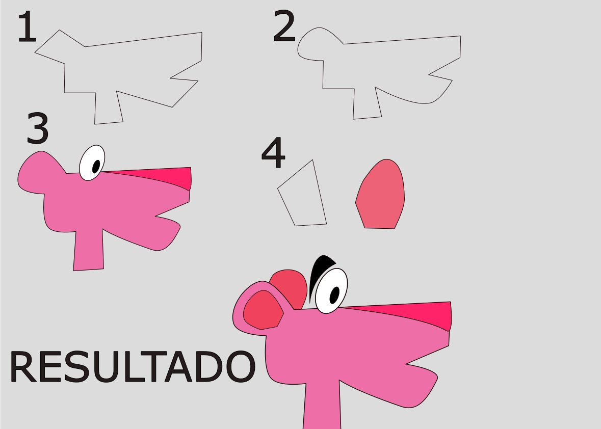
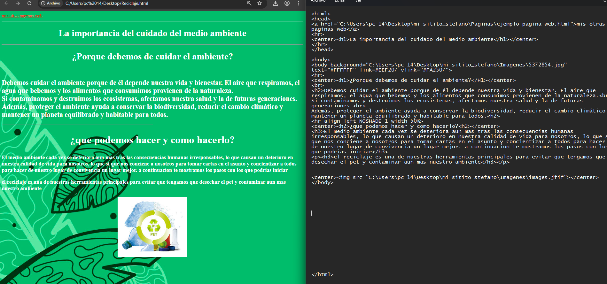
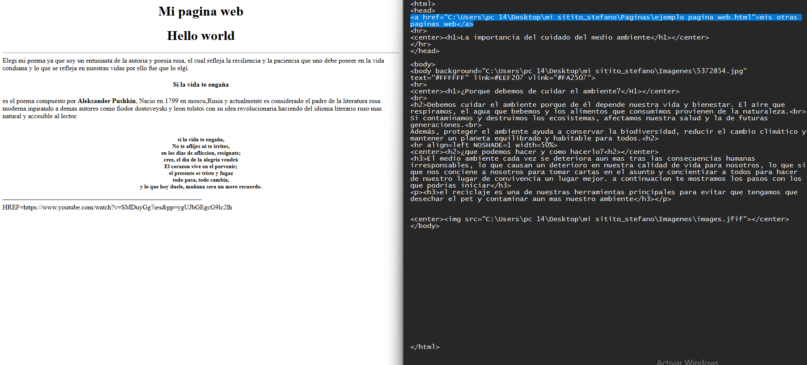
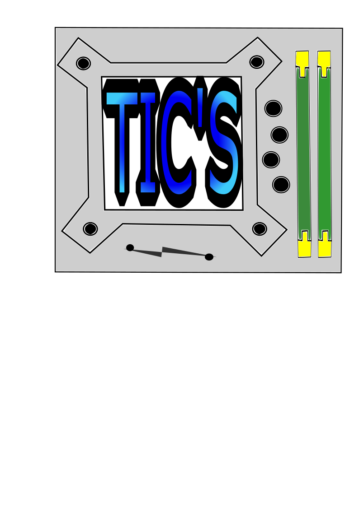
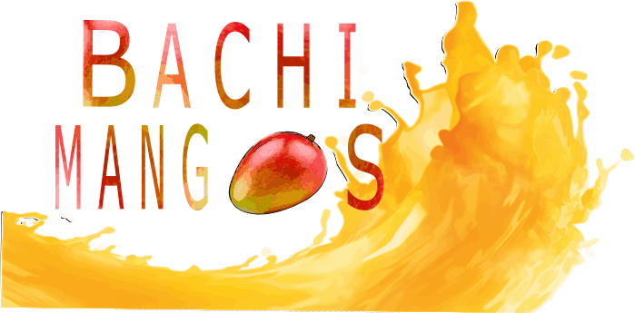

Tecnologías de la Información y Comunicación
El objetivo de la capacitación en TIC's es desarrollar habilidades tecnológicas en los alumnos, aprendiendo programación, diseño digital, desarrollo web y herramientas informáticas para aplicarlas en la vida escolar y profesional.
| Módulos (6to semestre) | Submódulos |
|---|---|
| Desarrollo Web | HTML básico y estructura web en bloc de notas |
| Diseño Digital | Uso de Inkscape y creación de logotipos |
| Proyecto Final | Desarrollo de página completa |








